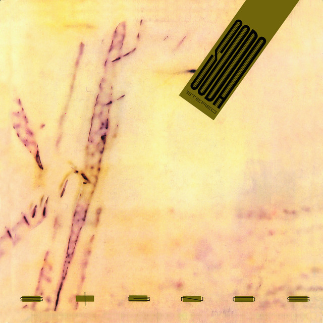

Signos
1986

Concepto
Contexto. En junio de 1986 la banda pasó 25 días de vacaciones por Europa. Al volver ensayó las canciones y grabó el disco entre mediados de septiembre y mediados de octubre en Moebio, Buenos Aires. Salió el 10 de noviembre.
Qué representa. Un disco compacto y envolvente, pensado como un recorrido de punta a punta. Cada tema tiene su propia imagen en el arte de la contraportada.
Sonido. New wave con aire post-punk, guitarras con textura y producción más pulida. Sus sencillos incluyeron “Persiana americana”, “No existes”, “Prófugos” y “Signos”.
Qué buscaba. Transmitir una madurez creativa nueva, influida por lo que vieron y escucharon en Inglaterra.
Por qué importa. Fue su salto continental. Además, fue el primer disco de rock argentino reeditado en CD.
Canciones
- 01Sin sobresaltos
- 02El rito
- 03Prófugos
- 04No existes
- 05Persiana americana
- 06En camino
- 07Signos
- 08Final caja negra